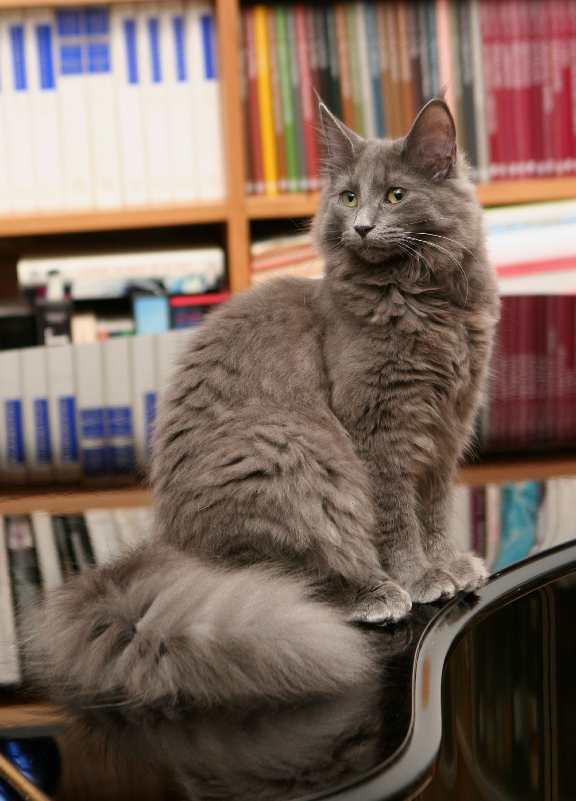

The Norwegian Forest cat (Norwegian: Norsk skogkatt or Norsk skaukatt) is a breed of domestic cat native to Northern Europe. This natural breed is adapted to a very cold climate, with top coat of glossy, long, water-shedding hairs, and a woolly undercoat for insulation. Although this is uncertain, the breed's ancestors may have been a landrace of short-haired cats brought to Norway by the Vikings around 1000 AD, who may also have brought with them long-haired cats, like those ancestral to the modern Siberian and Turkish Angora breeds. During World War II, the breed became nearly extinct until efforts by the Norwegian Forest Cat Club helped the breed by creating an official breeding program. It was registered as a breed with the European Fédération Internationale Féline in the 1970s, when a local cat fancier, Carl-Fredrik Nordane, took notice of the breed and made efforts to register it. Currently, the Norwegian Forest breed is very popular in Norway, Sweden, Iceland and France.
It is a big, strong cat, similar to the American Maine Coon breed, with long legs, a bushy tail and a sturdy body. The breed is very good at climbing, since they have strong claws. The lifespan is usually 14 to 16 years, though kidney and heart diseases have been reported in the breed. Specifically in this breed, complex rearrangements of glycogen branching enzyme (GBE1) can cause a perinatal hypoglycaemic collapse and a late-juvenile-onset neuromuscular degeneration in glycogen storage disease type IV.
References
This article uses material from the Wikipedia article "Norwegian Forest cat", which is released under the Creative Commons Attribution-Share-Alike License 3.0.
Picture: By Pieter Lanser (originally posted to Flickr as Queen Victoria 3) [CC BY 2.0], via Wikimedia Commons
{kind=link}